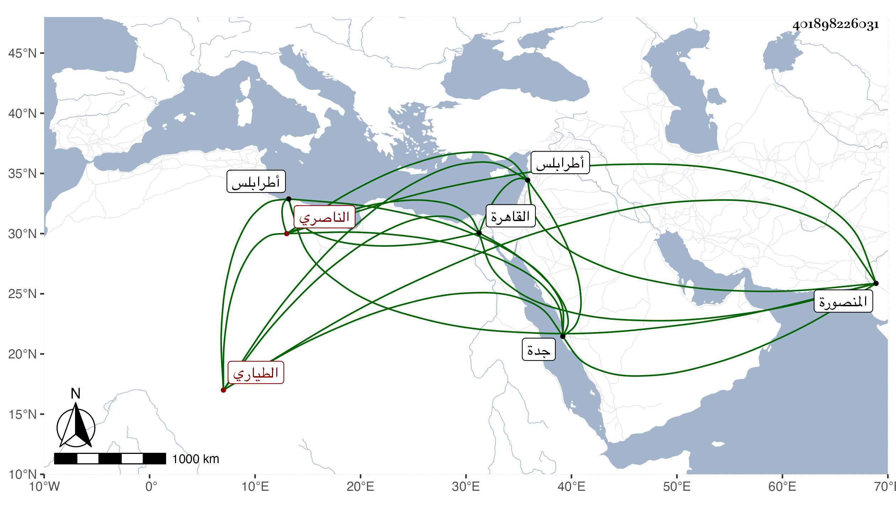

0902Sakhawi.DawLamic.ITO20230111-ara1.EIS1600.401898226031
Biography ID: 401898226031
984
اسنبغا الناصري محمد بن رجب ثم الطياري سودون وهو الأكثر في شهرته . اتصل بعد سودون بخدمة الناصر فرج وصار من الدوادارية الصغرى ثم صار في أيام الأشرف أمير عشرة ثم مقدم البريدية ثم توجه إلى جدة شادا وحسنت سيرته بالنسبة لغيره ومع ذلك فصودر ونفي إلى طرابلس ثم أنعم عليه فيها بأمرة طبلخاناة وآل أمره إلى أن عمل حاجبا ثانيا بالقاهرة وأمير طبلخاناه ثم عمله العزيز دوادارا ثانيا ثم قدمه الظاهر جقمق ثم عمله رأس نوبة النوب ومات وهم في حصار المنصورة ضحوة نهار الجمعة خامس ربيع الأول سنة سبع وخمسين وهو في عشر الثمانين وكان مذكورا بالعقل والكرم والتواضع والأدب والشجاعة مع مشاركة في الفقه والتاريخ وأيام الناس مذاكرة لطيفة .
